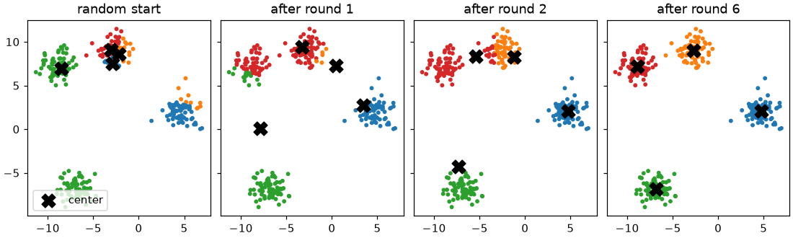
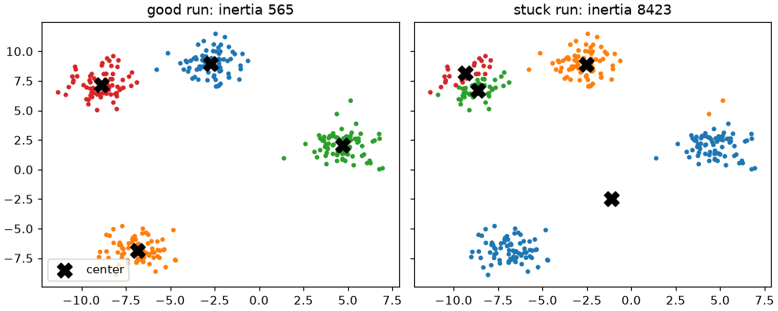
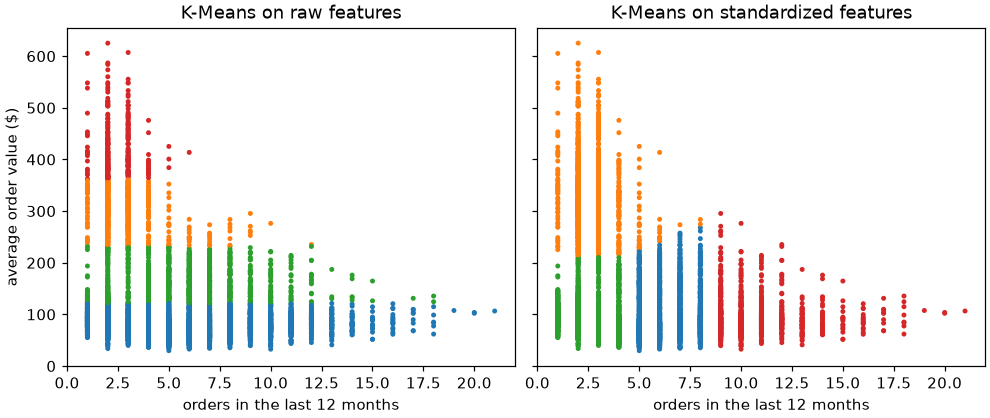
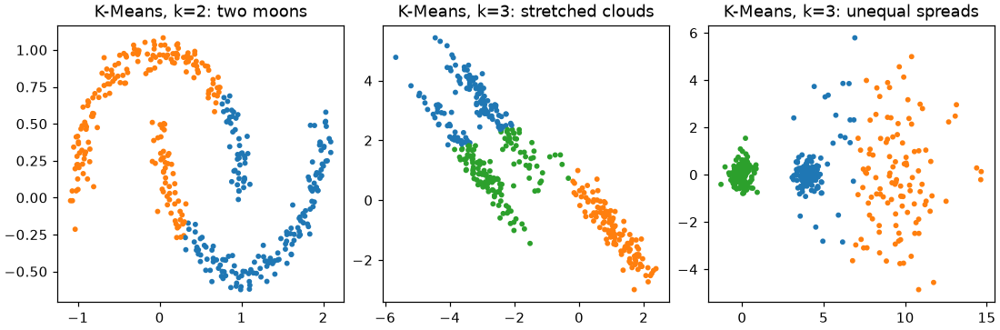

🔵 Lesson 8.1: K-Means Clustering
Find groups in data that has no answer column, by learning the simplest and most widely used clustering algorithm from the inside out.
🎯 Learning Objectives
By the end of this lesson, you will be able to:
- Explain what clustering is for and how it differs from the supervised models of Modules 1 to 7
- Describe Lloyd's algorithm (assign each point to the nearest center, move each center to the mean) and write it in NumPy
- Fit
KMeansand readlabels_,cluster_centers_,inertia_andn_iter_ - Explain why K-Means needs scaled features and several starts (
n_init, k-means++), and show what goes wrong without them - Profile clusters in the original units and recognize the cluster shapes K-Means cannot find
In This Lesson
🧭 Finding Groups Without Answers
Every model so far in this course learned from examples that came with an answer: this customer churned, that one stayed. That is supervised learning. Pinecrest's marketing team has a different question. They do not want to predict a known column; they want to know what kinds of customers they have, so that they can stop sending the same email to a weekly trail runner and to someone who buys one tent every three years. Nobody has labeled the customers by type. The groups, if they exist, have to be found in the data itself.
That is clustering, the main tool of unsupervised learning: there is an X but no y. A clustering algorithm puts similar rows together and different rows apart, and it is up to you to decide whether the groups mean anything. Module 8 covers the main families: centers (K-Means, this lesson and the next), trees of merges (hierarchical clustering, Lesson 8.3), density (DBSCAN and HDBSCAN, Lesson 8.4) and probability (Gaussian mixtures, Lesson 8.5).
💡 Mental Model: Campfires on a Big Campground
Picture a campground at night with hundreds of hikers scattered around and k campfires lit at random spots. Each hiker walks to the nearest campfire. Then each campfire is moved to the middle of the crowd that gathered around it. Now some hikers are closer to a different fire, so they walk over to it, and the fires move again. After a few rounds nobody wants to switch any more, and each fire sits in the middle of its own group.
That is the whole of K-Means. The fires are the centroids (cluster centers), "walk to the nearest fire" is the assign step, and "move the fire to the middle" is the update step. The k in K-Means is the number of fires, and you choose it.
Each round can only lower one number: the total squared distance from every point to its own center. scikit-learn calls it inertia (some books call it the within-cluster sum of squares, WCSS):
inertia = sum over all points of ‖x − center of x's cluster‖²
Small inertia means tight groups. K-Means is a search for the centers that make it as small as possible, and the assign-then-move loop (called Lloyd's algorithm) is how it searches.
🤔 Why This Matters
K-Means is fast, easy to explain to a marketing team, and scales to millions of rows. It is also easy to misuse: it always returns exactly k groups, even in data that has no groups at all. This lesson teaches the mechanics and the pitfalls; Lesson 8.2 teaches how to choose k and how to check that the groups are real.
🔵 A First K-Means
Start with data where you know groups exist, so you can see whether the algorithm finds them. make_blobs creates round clouds of points around random centers. It also returns which cloud each point came from; the _ throws that away, because a clustering algorithm never gets to see it.
import numpy as np
import pandas as pd
import matplotlib.pyplot as plt
from sklearn.datasets import make_blobs
from sklearn.cluster import KMeans
X_toy, _ = make_blobs(n_samples=300, centers=4, cluster_std=1.0, random_state=42)
print(X_toy.shape)
print(X_toy[:3].round(2))Output
(300, 2)
[[-9.3 6.47]
[-9.7 6.94]
[-1.69 7.79]]300 points with two features each, so you can draw them. Now fit K-Means with four clusters. It is an estimator like every other, so the API is the one from Lesson 1.1, except that fit takes only X.
km = KMeans(n_clusters=4, n_init=10, random_state=42)
km.fit(X_toy)
print(km.labels_[:12])
print(km.cluster_centers_.round(2))
print(f"inertia: {km.inertia_:.1f} iterations: {km.n_iter_}")Output
[3 3 0 1 3 1 2 1 0 2 0 2]
[[-2.71 8.97]
[-6.83 -6.83]
[ 4.72 2.04]
[-8.87 7.17]]
inertia: 564.9 iterations: 2Four learned attributes (trailing underscores, as always):
labels_: the cluster number of each training point, from 0 to 3.cluster_centers_: one row per cluster, the mean of its points, in the same units asX.inertia_: the total squared distance from each point to its own center.n_iter_: how many assign-and-move rounds the best run needed.
Inertia is not magic. Look up each point's own center, subtract, square and add everything up:
own_center = km.cluster_centers_[km.labels_] # one row per point: the center of its cluster
inertia_by_hand = ((X_toy - own_center) ** 2).sum()
print(f"{inertia_by_hand:.1f}")Output
564.9km.cluster_centers_[km.labels_] uses the 300 labels as row numbers into the 4-row table of centers, which gives a 300-row table where each row is that point's center. The same trick appears in the from-scratch version below.
💡 Why Seeds, Again
K-Means starts from random centers, so two runs can end in different places. random_state=42 makes the starts repeatable, so your numbers match this page. n_init=10 means "run the whole algorithm ten times from ten different starts and keep the run with the lowest inertia". The next sections show why both matter.
🔁 Inside the Algorithm: Lloyd's Loop
The loop is short enough to write yourself, and writing it is the best way to understand what KMeans does. The only clever line is the distance table: X[:, None, :] - centers[None, :, :] uses broadcasting to subtract every center from every point at once, giving an array of shape (points, k, features).
def lloyd(X, centers, max_steps=20):
"""Plain K-Means: assign each point to its nearest center, move each center to its points' mean."""
history = [centers]
for _ in range(max_steps):
sq_dist = ((X[:, None, :] - centers[None, :, :]) ** 2).sum(axis=2) # shape (n_points, k)
labels = sq_dist.argmin(axis=1) # step 1: assign
new_centers = np.array([X[labels == j].mean(axis=0) for j in range(len(centers))]) # step 2: move
history.append(new_centers)
if np.allclose(new_centers, centers): # nothing moved: converged
break
centers = new_centers
return labels, centers, history
rng = np.random.default_rng(12) # a seed whose random start is clearly poor, so there is something to watch
start = X_toy[rng.choice(len(X_toy), size=4, replace=False)] # 4 random points as starting centers
labels, centers, history = lloyd(X_toy, start)
my_inertia = ((X_toy - centers[labels]) ** 2).sum()
print(f"rounds: {len(history) - 1} inertia: {my_inertia:.1f}")Output
rounds: 6 inertia: 564.9Your fifteen lines reach the same inertia as scikit-learn. Seeing the loop at work makes the campfire picture concrete. This block redraws the assignment at the start, after the first two rounds, and at the end:
def assign(X, centers):
return ((X[:, None, :] - centers[None, :, :]) ** 2).sum(axis=2).argmin(axis=1)
fig, axes = plt.subplots(1, 4, figsize=(10, 3), layout="constrained", sharex=True, sharey=True)
for ax, step in zip(axes, [0, 1, 2, len(history) - 1]):
c = history[step]
ax.scatter(X_toy[:, 0], X_toy[:, 1], c=assign(X_toy, c), s=8, cmap="tab10", vmin=0, vmax=9)
ax.scatter(c[:, 0], c[:, 1], marker="X", s=150, c="black", label="center")
ax.set_title("random start" if step == 0 else f"after round {step}")
axes[0].legend(loc="lower left")
plt.show()
⚠️ What the Short Version Leaves Out
If a center ends up with no points at all, X[labels == j].mean(axis=0) is the mean of nothing and returns nan (with a warning). scikit-learn handles this case by moving the empty center to a far-away point, and it uses careful starting points (next section), a tolerance-based stop, and a faster variant of the loop. Use your version to understand the algorithm, and KMeans for real work.
🎲 Starting Points and Local Minima
Lloyd's loop always goes downhill: every round lowers the inertia or leaves it unchanged. But "downhill from where you started" is not the same as "the lowest point there is". Run K-Means once each from five different purely random starts and compare where they end:
for seed in range(5):
one_run = KMeans(n_clusters=4, init="random", n_init=1, random_state=seed).fit(X_toy)
print(f"seed {seed}: inertia {one_run.inertia_:7.1f} rounds {one_run.n_iter_}")Output
seed 0: inertia 564.9 rounds 3
seed 1: inertia 8422.6 rounds 4
seed 2: inertia 2062.1 rounds 4
seed 3: inertia 2059.1 rounds 2
seed 4: inertia 564.9 rounds 2Same data, same k, very different answers. Some runs got stuck in a local minimum: a solution where no single assign or move step helps, but which is still bad. Here is what one of those looks like next to the good one:
bad = KMeans(n_clusters=4, init="random", n_init=1, random_state=1).fit(X_toy)
fig, axes = plt.subplots(1, 2, figsize=(9, 3.6), layout="constrained", sharex=True, sharey=True)
for ax, model, title in [(axes[0], km, "good run"), (axes[1], bad, "stuck run")]:
ax.scatter(X_toy[:, 0], X_toy[:, 1], c=model.labels_, s=8, cmap="tab10", vmin=0, vmax=9)
ax.scatter(*model.cluster_centers_.T, marker="X", s=150, c="black", label="center")
ax.set_title(f"{title}: inertia {model.inertia_:.0f}")
axes[0].legend(loc="lower left")
plt.show()
scikit-learn uses two defenses, and you should know both:
- k-means++ starts (the default,
init="k-means++"): the first center is a random point, and each next one is picked at random with a probability proportional to its squared distance from the nearest center already chosen. Far-away points are likely picks, so the starting centers spread out over the data. - Several runs (
n_init): run the whole algorithm several times from different starts and keep the run with the lowest inertia.
for seed in range(5):
one_run = KMeans(n_clusters=4, init="k-means++", n_init=1, random_state=seed).fit(X_toy)
print(f"seed {seed}: inertia {one_run.inertia_:7.1f}")
print("default n_init:", KMeans(n_clusters=4).n_init)Output
seed 0: inertia 564.9
seed 1: inertia 564.9
seed 2: inertia 564.9
seed 3: inertia 564.9
seed 4: inertia 564.9
default n_init: autoSpread-out starts fix most of the bad luck on easy data like this. The default n_init="auto" means one run when the start is k-means++ (and ten for init="random"). On messy real data one run can still land in a poor solution, so this course writes n_init=10 explicitly whenever the result matters. Ten runs cost ten times the time, which is rarely a problem below a few hundred thousand rows.
📏 Scale Before You Cluster
Now real data. Two columns describe how Pinecrest customers shop: how many orders they placed in the last twelve months and how much a typical order was worth.
customers = pd.read_csv("data/customers_churn.csv")
two = customers[["orders_12m", "avg_order_value"]]
print(two.describe().loc[["mean", "std", "min", "max"]].round(1))Output
orders_12m avg_order_value
mean 5.0 140.9
std 3.2 103.6
min 1.0 29.8
max 21.0 625.2Orders run from 1 to 21; order values run from about $30 to $625. K-Means measures straight-line distance, so a difference of $10 in order value counts ten times as much as a difference of one whole order. Cluster the raw numbers and see what happens:
from sklearn.preprocessing import StandardScaler
raw_km = KMeans(n_clusters=4, n_init=10, random_state=42).fit(two)
scaler2 = StandardScaler().set_output(transform="pandas")
two_scaled = scaler2.fit_transform(two)
scaled_km = KMeans(n_clusters=4, n_init=10, random_state=42).fit(two_scaled)
print("raw centers:")
print(pd.DataFrame(raw_km.cluster_centers_, columns=two.columns).round(1).sort_values("avg_order_value"))
print("scaled centers, back in original units:")
print(pd.DataFrame(scaler2.inverse_transform(scaled_km.cluster_centers_), columns=two.columns)
.round(1).sort_values("avg_order_value"))Output
raw centers:
orders_12m avg_order_value
0 5.5 80.5
2 5.7 163.7
1 2.7 300.6
3 2.4 423.2
scaled centers, back in original units:
orders_12m avg_order_value
2 2.4 94.4
3 10.8 96.7
0 6.4 98.7
1 2.6 332.3Look at the raw centers: they are spaced along order value, roughly $80, $160, $300 and $420, and the order counts only follow along because big spenders happen to buy less often. The clusters are bands of dollars, and the order column had almost no say. After scaling, both columns count: three groups with similar baskets (about $95 to $99) are separated by how often they buy (2.4, 6.4 and 10.8 orders), and one group of rare, big-ticket buyers stands apart. A picture makes it obvious:
fig, axes = plt.subplots(1, 2, figsize=(9, 3.8), layout="constrained", sharey=True)
for ax, model, title in [(axes[0], raw_km, "raw features"), (axes[1], scaled_km, "standardized features")]:
ax.scatter(two["orders_12m"], two["avg_order_value"], c=model.labels_, s=5, cmap="tab10", vmin=0, vmax=9)
ax.set_title(f"K-Means on {title}")
ax.set_xlabel("orders in the last 12 months")
axes[0].set_ylabel("average order value ($)")
plt.show()
💡 Scaling Is a Choice About What "Similar" Means
In clustering there is no target to tell you whether a feature is useful, so the scale of each feature is your statement about how much it matters. StandardScaler says "one standard deviation of anything counts the same". That is a sensible default, not a law: if a business expert says order value matters twice as much, multiplying that scaled column by 2 is a legitimate choice. Lesson 8.2 also log-transforms skewed columns before scaling.
⚠️ Where Leakage Still Applies
When you only want to describe the customers you have, fitting the scaler and K-Means on all of them is fine: there is no test set to leak into. Two situations change that. If you will assign new customers to the groups, keep the fitted scaler and reuse it (never refit on the new data). If you will use the cluster as a feature in a supervised model, the scaler and K-Means belong inside the Pipeline, fitted on training rows only, exactly like any other transformer (Lesson 2.2).
🏷️ Labels, Centers and New Customers
A fitted KMeans can place customers it has never seen. predict returns the nearest center's number, and transform returns the distance to every center, which tells you how clear-cut the assignment is. New customers go through the same fitted scaler first.
newcomers = pd.DataFrame({"orders_12m": [12, 2, 8.6], "avg_order_value": [80.0, 450.0, 97.0]})
newcomers_scaled = scaler2.transform(newcomers)
print(scaled_km.predict(newcomers_scaled))
print(scaled_km.transform(newcomers_scaled).round(2))Output
[3 1 3]
[[1.72 3.79 2.96 0.41]
[3.66 1.15 3.44 4.35]
[0.67 2.93 1.91 0.67]]Each row of the distance table has one entry per cluster, and predict picks the smallest. The first two newcomers are clearly closest to one center. The third, a customer halfway between the moderate and the frequent buyers, is almost the same distance from two centers: K-Means still gives it a single label, with no hint of doubt. That hard, all-or-nothing assignment is one of the things Gaussian mixtures (Lesson 8.5) soften into probabilities.
🔑 Key Terms
Cluster: a group of similar rows. Centroid: the mean of a cluster's rows, stored in cluster_centers_. Inertia: the total squared distance from each row to its centroid; lower is tighter. Local minimum: a solution the algorithm cannot improve step by step, though a better one exists. Hard assignment: each row belongs to exactly one cluster.
One more thing about labels: the numbers 0, 1, 2, 3 are just names. Cluster 2 is not "more" than cluster 1, and a run with another seed may give the same group a different number. Always describe clusters by their centers and members, never by their number alone (Common Mistakes, number 4).
🚧 What K-Means Assumes
Because every point joins its nearest center, the border between two clusters is always a straight line halfway between their centers. That builds in assumptions: clusters are roughly round, of similar spread, and separated in straight lines. Three synthetic datasets break those assumptions on purpose:
from sklearn.datasets import make_moons
X_moons, _ = make_moons(n_samples=400, noise=0.06, random_state=42)
X_blob3, _ = make_blobs(n_samples=400, centers=3, random_state=170)
X_stretched = X_blob3 @ np.array([[0.6, -0.64], [-0.41, 0.85]]) # shear the round blobs
X_spread, _ = make_blobs(n_samples=400, centers=[[0, 0], [4, 0], [9, 0]],
cluster_std=[0.4, 0.4, 2.2], random_state=42) # one wide cloud, two tight ones
fig, axes = plt.subplots(1, 3, figsize=(10, 3.3), layout="constrained")
for ax, (data, k, title) in zip(axes, [(X_moons, 2, "two moons"), (X_stretched, 3, "stretched clouds"),
(X_spread, 3, "unequal spreads")]):
labels_k = KMeans(n_clusters=k, n_init=10, random_state=42).fit_predict(data)
ax.scatter(data[:, 0], data[:, 1], c=labels_k, s=8, cmap="tab10", vmin=0, vmax=9)
ax.set_title(f"K-Means, k={k}: {title}")
plt.show()
In every panel K-Means returned exactly the number of clusters it was asked for, and it reported no error. That is the general lesson of clustering: an algorithm always answers, so checking the answer is your job. For shapes like these, Lesson 8.3's single linkage, Lesson 8.4's density-based methods and Lesson 8.5's Gaussian mixtures do better.
✅ When K-Means Is a Good Choice
Numeric features that you can scale sensibly, groups that are roughly blob-shaped, and a need for speed or a simple story ("each segment is described by its average customer"). Customer segmentation on a handful of behavior features is the classic fit, which is exactly the project below.
⚠️ Common Mistakes
Two of these raise errors. The other three are silent, which makes them more dangerous.
1. A Text Column in X
KMeans(n_clusters=3, n_init=10, random_state=42).fit(customers[["orders_12m", "home_store"]])Error
ValueError: could not convert string to float: 'Bend'What it means: K-Means computes means and distances, which need numbers. Fix: cluster numeric behavior columns. One-hot encoding a category does make it numeric, but distances between 0/1 columns and scaled numbers are hard to interpret; describe clusters with categories afterwards instead (the project does this with churn).
2. Missing Values
KMeans(n_clusters=3, n_init=10, random_state=42).fit(customers[["orders_12m", "email_opens_90d"]])Error
ValueError: Input X contains NaN.
KMeans does not accept missing values encoded as NaN natively. For supervised learning, you might want to consider sklearn.ensemble.HistGradientBoostingClassifier and Regressor which accept missing values encoded as NaNs natively. Alternatively, it is possible to preprocess the data, for instance by using an imputer transformer in a pipeline or drop samples with missing values. See https://scikit-learn.org/stable/modules/impute.html You can find a list of all estimators that handle NaN values at the following page: https://scikit-learn.org/stable/modules/impute.html#estimators-that-handle-nan-valuesWhat it means: 537 customers have no email-open count, and a distance to a missing value is undefined. Fix: impute (Lesson 2.1) or leave the column out. Think before imputing: a cluster of "customers with a filled-in median" is an artifact of your imputation, not a real group.
3. Clustering Unscaled Features
No error, as the scaling section showed: the column with the biggest numbers (here dollars) quietly decides the clusters. Fix: scale first, and check the centers in original units to see that every feature varies across clusters.
4. Treating Cluster Numbers as Stable Names
rerun = KMeans(n_clusters=4, n_init=10, random_state=7).fit(two_scaled)
print(pd.crosstab(scaled_km.labels_, rerun.labels_, rownames=["seed 42"], colnames=["seed 7"]))Output (no error, and that is the problem)
seed 7 0 1 2 3
seed 42
0 1978 0 0 0
1 0 1128 0 0
2 0 0 1993 0
3 0 0 0 901What happened: each row of the table has a single large count, so both runs found essentially the same four groups, but the numbers attached to them are shuffled. Code that says "cluster 2 is our premium segment" breaks the moment someone changes the seed, the data or the library version. Fix: name clusters from their profiles (sort by a center value, or map numbers to names after looking at the profile), and store the fitted model if the numbering must stay fixed.
5. Reading Scaled Centers as Real Values
print(scaled_km.cluster_centers_[0].round(2))
print(scaler2.inverse_transform(scaled_km.cluster_centers_)[0].round(1))Output (no error, and that is the problem)
[ 0.44 -0.41]
[ 6.4 98.7]What happened: the centers live in the space K-Means was fitted on, here standard deviations from the mean. A customer with 0.44 orders and -0.41 dollars per order does not exist; in real units this center is 6.4 orders of about $99. Fix: pass the centers through the fitted scaler's inverse_transform, or simply average the original columns per cluster with groupby, as the project does.
🛠️ Project: Pinecrest's First Customer Groups
The marketing team wants a first answer to "what kinds of customers do we have?" built from four behavior columns: how often people buy (orders_12m), how much they spend per order (avg_order_value), how much of their spending was on discount (discount_share) and how much they send back (return_rate). You will cluster all 6,000 customers into five groups, describe each group in plain units, and check one thing the clustering never saw: how often each group churned. Lesson 8.2 asks whether five is the right number; today, take it as the team's starting guess. Start a fresh notebook, lesson_8_1_project. Allow about 35 minutes.
🛠️ Step 1: Load and select the behavior columns (5 min)
Keep the ID and the churn column aside for later. They do not go into the clustering.
import pandas as pd
from sklearn.preprocessing import StandardScaler
from sklearn.cluster import KMeans
customers = pd.read_csv("data/customers_churn.csv")
behavior = ["orders_12m", "avg_order_value", "discount_share", "return_rate"]
X = customers[behavior]
print(X.shape, "missing:", int(X.isna().sum().sum()))
print(X.describe().loc[["mean", "50%", "max"]].round(2))Output
(6000, 4) missing: 0
orders_12m avg_order_value discount_share return_rate
mean 5.01 140.92 0.21 0.09
50% 4.00 96.90 0.14 0.05
max 21.00 625.18 0.83 0.57🛠️ Step 2: Scale and fit five clusters (5 min)
scaler = StandardScaler().set_output(transform="pandas")
X_scaled = scaler.fit_transform(X)
kmeans = KMeans(n_clusters=5, n_init=10, random_state=42).fit(X_scaled)
print(f"inertia {kmeans.inertia_:.0f} after {kmeans.n_iter_} rounds")Output
inertia 5713 after 5 rounds🛠️ Step 3: Check that the answer is not a fluke of the start (5 min)
Refit with three other seeds. If the best inertia is the same, the ten runs inside each fit are finding the same solution.
for seed in [0, 1, 2]:
check = KMeans(n_clusters=5, n_init=10, random_state=seed).fit(X_scaled)
print(f"seed {seed}: inertia {check.inertia_:.0f}")Output
seed 0: inertia 5713
seed 1: inertia 5713
seed 2: inertia 5713🛠️ Step 4: Profile each cluster in plain units (10 min)
Attach the labels to the original table and average the original columns per cluster. Add the share of app users and the churn rate: neither was used to form the clusters, so if they differ between groups, the groups capture something real about behavior.
pd.set_option("display.width", 120)
customers["cluster"] = kmeans.labels_
profile = customers.groupby("cluster")[behavior + ["app_user", "churned"]].mean()
profile.insert(0, "customers", customers["cluster"].value_counts().sort_index())
print(profile.round(2))Output
customers orders_12m avg_order_value discount_share return_rate app_user churned
cluster
0 812 6.26 164.64 0.18 0.28 0.49 0.10
1 1522 2.12 97.98 0.13 0.06 0.24 0.19
2 1331 9.29 88.76 0.10 0.04 0.54 0.03
3 1262 5.32 65.82 0.51 0.08 0.47 0.32
4 1073 2.48 336.92 0.11 0.05 0.31 0.16Read each row as a portrait. One group buys about nine times a year in modest baskets and almost never churns. One relies on discounts for half its spending and churns at about 30%. One spends over $300 per order but rarely. One returns about a quarter of what it buys. One buys about twice a year and is otherwise unremarkable. The churn rates range from about 3% to about 32%, though churn played no part in the clustering.
🛠️ Step 5: Name the groups (5 min)
Names make clusters usable, and choosing them forces you to read the profile. The numbers below match this page's run; if your profile table orders the groups differently, map the names to your own numbers.
names = {0: "Frequent Returners", 1: "Occasional Buyers", 2: "Loyal Regulars",
3: "Discount Seekers", 4: "Big-Ticket Buyers"}
customers["group"] = customers["cluster"].map(names)
summary = customers.groupby("group").agg(customers=("customer_id", "size"),
churn_rate=("churned", "mean"))
print(summary.sort_values("churn_rate", ascending=False).round(3))Output
customers churn_rate
group
Discount Seekers 1262 0.317
Occasional Buyers 1522 0.191
Big-Ticket Buyers 1073 0.159
Frequent Returners 812 0.105
Loyal Regulars 1331 0.034🛠️ Step 6: Save the assignments (5 min)
customers[["customer_id", "cluster", "group"]].to_csv("customer_groups.csv", index=False)
saved = pd.read_csv("customer_groups.csv")
print(saved.shape)
print(saved.head(3))Output
(6000, 3)
customer_id cluster group
0 C100001 2 Loyal Regulars
1 C100002 2 Loyal Regulars
2 C100003 4 Big-Ticket BuyersThe file holds an ID and a group per customer, ready to join to a mailing list. Lesson 8.2 turns this into a reusable pipeline that can also place next month's new customers.
✅ Project Completion Checklist
- You clustered on four scaled behavior columns, with no ID, churn or text columns in
X - Your five-cluster inertia is the same for several seeds (with
n_init=10) - Your profile table shows each cluster's size and its averages in original units
- You compared churn rates across clusters and noted that churn was not used to form them
- Every cluster has a descriptive name chosen from its profile, not from its number
customer_groups.csvhas 6,000 rows with an ID, a cluster number and a name
🏋️ Hands-on Exercises
These continue in the project notebook, so customers, X_scaled and kmeans already exist.
🏋️ Exercise 1: More Clusters, Lower Inertia
Fit K-Means on X_scaled for k from 1 to 8 (n_init=10, random_state=42) and print the inertia for each. Does it ever go up? Why does that make "pick the k with the lowest inertia" a useless rule?
💡 Hint
With one more center, the old solution is still possible (put the new center anywhere useless), so the best solution can only get better or stay the same. What happens when k equals the number of customers?
✅ Solution
for k in range(1, 9):
fit_k = KMeans(n_clusters=k, n_init=10, random_state=42).fit(X_scaled)
print(f"k={k}: inertia {fit_k.inertia_:7.0f}")Output
k=1: inertia 24000
k=2: inertia 17625
k=3: inertia 13031
k=4: inertia 9014
k=5: inertia 5713
k=6: inertia 5191
k=7: inertia 4738
k=8: inertia 4405Inertia falls at every step. With one center it is the total variance (6,000 customers × 4 scaled columns = 24,000). With 6,000 centers it would be 0, every customer its own cluster. The lowest inertia always belongs to the largest k, so it cannot choose k. Look instead at where the drops get small: from 4 to 5 the inertia falls by about 3,300, from 5 to 6 by only about 500. That bend, the "elbow", is the first tool of Lesson 8.2.
🏋️ Exercise 2: Borderline Customers
Use kmeans.transform(X_scaled) to get each customer's distance to all five centers. For each customer compute the gap between the nearest and second-nearest distance. How many customers have a gap below 0.1 (almost exactly between two groups)? Which pair of groups do they sit between most often?
💡 Hint
np.sort(dist, axis=1) sorts each row; columns 0 and 1 are then the nearest and second nearest. np.argsort(dist, axis=1)[:, :2] gives which clusters they are.
✅ Solution
import numpy as np
dist = kmeans.transform(X_scaled)
nearest_two = np.sort(dist, axis=1)[:, :2]
gap = nearest_two[:, 1] - nearest_two[:, 0]
border = gap < 0.1
print(f"{border.sum()} customers ({border.mean():.1%}) are within 0.1 of a second group")
pairs = np.sort(np.argsort(dist, axis=1)[:, :2], axis=1)[border]
pair_names = [f"{names[a]} / {names[b]}" for a, b in pairs]
print(pd.Series(pair_names).value_counts().head(3))Output
114 customers (1.9%) are within 0.1 of a second group
Occasional Buyers / Big-Ticket Buyers 24
Occasional Buyers / Loyal Regulars 23
Occasional Buyers / Discount Seekers 19
Name: count, dtype: int64A few percent of customers are genuinely on a border. K-Means gives them a confident single label anyway. For a marketing email that hardly matters; for anything costly, borderline customers deserve a second look, or a method that reports uncertainty (Lesson 8.5).
🏋️ Exercise 3: Does Your From-Scratch Version Agree?
Run your lloyd function from the lesson on X_scaled.to_numpy(), starting from the centers that scikit-learn found (kmeans.cluster_centers_). It should stop almost at once. Check with np.allclose that it ends at the same centers and that every label matches. (Copy the lloyd function into the project notebook if you started a fresh one.)
💡 Hint
A converged solution is a fixed point of the loop: assigning and moving changes nothing.
✅ Solution
Xs = X_scaled.to_numpy()
my_labels, my_centers, my_history = lloyd(Xs, kmeans.cluster_centers_)
print("rounds:", len(my_history) - 1)
print("same centers:", np.allclose(my_centers, kmeans.cluster_centers_))
print("same labels :", (my_labels == kmeans.labels_).all())Output
rounds: 1
same centers: True
same labels : TrueOne round: the assignment is unchanged, so the centers stay put and the loop stops. scikit-learn's answer is a fixed point of exactly the algorithm you wrote.
🏋️ Exercise 4: Write k-means++ Seeding (Stretch)
Write kmeans_pp_start(X, k, rng): pick the first center uniformly at random; then, k − 1 times, compute each point's squared distance to its nearest chosen center and pick the next center with probability proportional to that distance (rng.choice(len(X), p=...)). Use it to start lloyd on X_toy with five different seeds and compare the final inertias with the purely random starts from the lesson.
💡 Hint
Keep the chosen centers in a list and recompute ((X[:, None, :] - np.array(chosen)[None]) ** 2).sum(axis=2).min(axis=1) each time. Divide by its sum to get probabilities.
✅ Solution
def kmeans_pp_start(X, k, rng):
chosen = [X[rng.integers(len(X))]]
for _ in range(k - 1):
d2 = ((X[:, None, :] - np.array(chosen)[None]) ** 2).sum(axis=2).min(axis=1)
chosen.append(X[rng.choice(len(X), p=d2 / d2.sum())])
return np.array(chosen)
for seed in range(5):
seed_rng = np.random.default_rng(seed)
pp_labels, pp_centers, _ = lloyd(X_toy, kmeans_pp_start(X_toy, 4, seed_rng))
rand_start = X_toy[np.random.default_rng(seed).choice(len(X_toy), size=4, replace=False)]
r_labels, r_centers, _ = lloyd(X_toy, rand_start)
pp_inertia = ((X_toy - pp_centers[pp_labels]) ** 2).sum()
r_inertia = ((X_toy - r_centers[r_labels]) ** 2).sum()
print(f"seed {seed}: k-means++ {pp_inertia:7.1f} random {r_inertia:7.1f}")Output
seed 0: k-means++ 564.9 random 2060.5
seed 1: k-means++ 564.9 random 2060.5
seed 2: k-means++ 564.9 random 564.9
seed 3: k-means++ 564.9 random 2058.7
seed 4: k-means++ 564.9 random 2059.1The spread-out starts reach the good solution far more often than random starts. k-means++ does not guarantee the best answer (that problem is too hard to solve exactly for large data), but it makes bad starts unlikely, which is why it is the default.
🎯 Quick Quiz
🎯 Check Your Understanding
Question 1: What does this print?
quiz_km = KMeans(n_clusters=2, n_init=10, random_state=42).fit([[1], [2], [10], [11]])
print(quiz_km.inertia_)Question 2: You cluster customers on orders_12m (1 to 21) and spend_12m (55 to 2,823 dollars) without scaling. What happens?
Question 3: Five single runs of K-Means with init="random" on the same data end with inertias of 565, 8,423, 2,062, 2,059 and 565. What is the best explanation?
Question 4: Yesterday cluster 3 was your discount-seeking segment. Today, after adding a month of data and refitting, cluster 3 is the big-ticket segment. What happened?
Question 5: On which data will K-Means with the right k most likely fail to find the true groups?
❓ Common Questions at This Stage
Why is there no train/test split in this lesson?
A test set measures how well predictions match known answers on unseen rows, and clustering has no answers to match. When the goal is to describe the customers you have, you cluster all of them. What you must still protect against is fooling yourself, which is why Lesson 8.2 checks the clusters' stability and usefulness. If clusters feed a supervised model, they are fitted inside a pipeline on training rows only.
Is the result the "true" segmentation of Pinecrest's customers?
Not automatically. K-Means returns a partition into exactly k groups, whether or not the data has real groups. Evidence that these are meaningful comes from outside the algorithm: the groups are stable across seeds, their profiles make business sense, and they differ in things the clustering never saw, like churn. Lesson 8.2 adds scores (silhouette) and resampling checks.
What is the difference between K-Means and k-nearest neighbors?
Both have a "k" and both use distances, which is where the similarity ends. k-NN (Lesson 4.1) is supervised: k is the number of labeled neighbors that vote on a prediction. K-Means is unsupervised: k is the number of groups to find, and there are no labels at all.
Can K-Means use other distances, like Manhattan or cosine?
Not in scikit-learn. The "move the center to the mean" step is what makes K-Means work, and the mean is the best center only for squared straight-line distance. For text-like data, normalizing each row to length 1 first makes straight-line distance behave like cosine distance. For other distances, hierarchical clustering (Lesson 8.3) accepts a metric.
🌟 Going Further: Bonus Challenge
K-Means also compresses images: treat every pixel as a point in (red, green, blue) space, cluster the pixels into 16 colors, and replace each pixel by its cluster center. Draw a small picture yourself with NumPy (for example a smooth color gradient plus a few shapes, about 100 × 100 pixels), reshape it to (n_pixels, 3), fit KMeans(n_clusters=16, n_init=10, random_state=42), and rebuild the image from cluster_centers_[labels_]. Compare the two with plt.imshow. How few colors can you use before the gradient shows visible steps?
📓 Learning Journal
Take five minutes to write in your learning journal (the journal.md file you started in Lesson 0.1, or a paper notebook). Jot down:
- Key concepts you learned today
- Techniques that clicked (and the ones that have not, yet)
- Questions or confusion to come back to
- Ideas to try on your own
- Progress and feelings: how did this lesson go for you?
✍️ This lesson's prompt: Explain K-Means to a Pinecrest marketer in four sentences using the campfire picture, without the words "centroid" or "inertia". Then write the one piece of evidence from your project that makes you believe the five groups are more than an artifact of the algorithm, and one reason you still are not sure.
📝 Lesson Summary
🎓 Key Takeaways
- Clustering is unsupervised: it groups rows by similarity with no target column, and it always returns an answer, so validation is your job
- K-Means alternates two steps, assign each point to its nearest center and move each center to its points' mean, until nothing changes
- It minimizes inertia, the total squared distance to the own center; inertia always falls as k grows
- Lloyd's loop can stop in a local minimum; k-means++ starts and
n_init=10runs guard against it - Distances depend on units, so scale features first; the scale you choose says how much each feature matters
- Cluster numbers are arbitrary names; describe clusters by their profiles in original units
- K-Means assumes round clusters of similar spread and draws straight borders; moons and stretched shapes defeat it
🏆 What You've Accomplished
- You wrote K-Means from scratch in NumPy and matched scikit-learn's result
- You watched a bad start produce a local minimum and saw how k-means++ prevents it
- You showed with two charts how unscaled dollars hijack a clustering
- You grouped 6,000 Pinecrest customers, named five groups from their profiles and found churn rates from about 3% to about 32%
🔭 Looking Ahead
In Lesson 8.2: Choosing k and Customer Segments you will question today's guess of five. You will use the elbow and silhouette scores, test whether the groups survive resampling, log-transform skewed features, scale K-Means up with MiniBatchKMeans, and turn the segmentation into a pipeline and a short brief the marketing team can act on.
📋 Before the Next Lesson
- Keep your project notebook and
customer_groups.csv: Lesson 8.2 tests whether five was the right number of groups. - Plot a histogram of
avg_order_valueand oforders_12m. Are they symmetric or skewed? Write down what that might do to a mean-based algorithm. - Rerun the project with
n_clusters=4and6. Which of your named groups merge or split?
🌱 Encouragement for the Journey
Today you built a learning algorithm with your own hands and then used the professional version on 6,000 customers. Unsupervised learning can feel slippery at first because nothing says "correct". That discomfort is healthy: it is the habit of asking "is this real?" that separates a useful segmentation from a pretty chart. You already asked it today, with seeds, scaling and a churn check. Keep going.